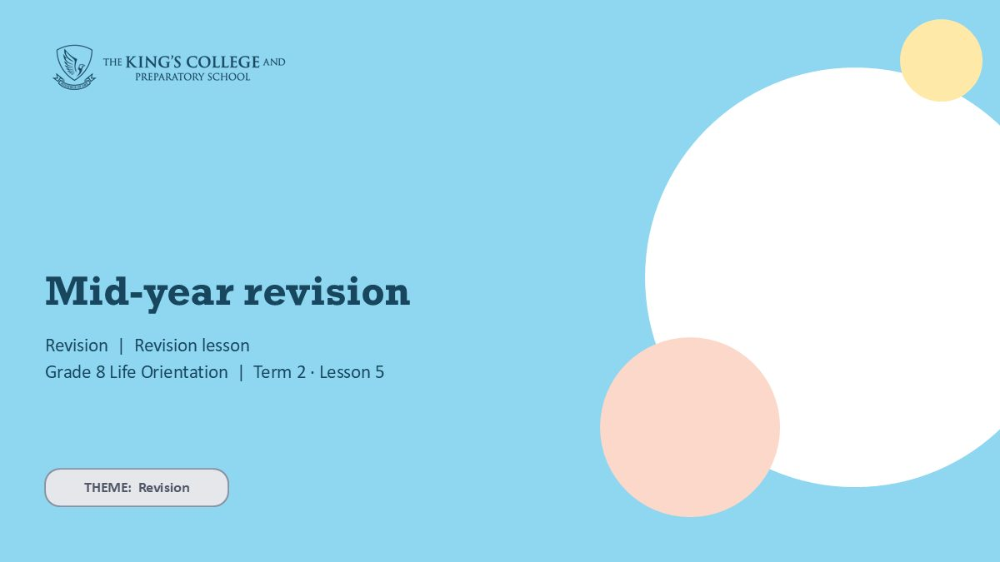

Term 2 · Lesson 5 · Revision lesson: practice paper
Mid-year revision
Start here
Today I will
- Practise a mid-year paper under time
- Use the building blocks in every answer
- Mark my paper and plan my exam revision
Think first
Which topic from Terms 1 and 2 do you feel most ready for, and which least?
Words to know
- Section A
- Short questions: multiple choice, terms, true/false.
- Section B
- Questions about a scenario or source.
- Section C
- A longer answer: choose ONE of two questions.
- Mark allocation
- The numbers in brackets that show how many points to give.
Slides

Notes
Exam tips
- Read first: Read the instructions and every question before you start.
- Watch the time: About 1 minute per mark; don't spend too long on one question.
- Build answers: Statement, reason, result, example.
- Use the source: In Section B, use names and details from the scenario.
- Choose wisely: In Section C, pick the question you can explain best, not the one that looks shortest.
Remember
Read, plan, build, check.
Written practice
SECTION A (8 marks)
- A1Choose the correct answer. Write only the letter.
(a) Which is a LONG-TERM consequence of substance abuse? A A headache B Addiction C Feeling dizzy D Getting home late
(b) Section 24 of the Constitution protects the right to… A education B a healthy environment C privacy D equality
(c) Which of these is one of the VARK learning styles? A Kinaesthetic B Enterprising C Assertive D Conventional(3 x 1) (3) - A2Give ONE word or term for each description.
(a) Needing more of a substance to feel the same effect.
(b) Unfair, negative beliefs about a group of people that lead to shame and exclusion.
(c) Meeting our needs today without harming future generations.(3 x 1) (3) - A3True or false: 'HIV can be spread by sharing a water bottle.' If false, correct the statement.(1 x 2) (2)
SECTION B (9 marks)
Read the source
Aarav's family lives near a stream where people dump rubbish. In summer the stream smells, rats have moved into the area and his little sister has had a stomach bug twice this month. Aarav wants to do something about it, but his friends say: 'Forget it. It's the municipality's problem, not ours.'
- B1Identify the environmental health problem in the source.(1 x 1) (1)
- B2Explain how this problem is affecting the health of Aarav's family.(1 x 2) (2)
- B3Recommend TWO actions Aarav and his community can take. In each answer, also give the result.(2 x 2) (4)
- B4Explain why caring for the environment is everyone's responsibility, and not only the municipality's.(1 x 2) (2)
SECTION C (8 marks): answer ONE question
- C1Analyse TWO ways in which substance abuse can affect a teenager's future.(2 x 4) (8)
- C2OR: Analyse TWO ways in which 'I' statements and the IDEAL steps can help two friends resolve a conflict.(2 x 4) (8)
Finished early?
Exam practice: Set B
Prepare for the mid-year exam with one exam practice set.
- Turn to the Term 2 exam practice bank at the back of your Activity Book and find Set B: Our environment (or pick the Term 1 or Term 2 set you feel least ready for).
- Read the brackets first, and allow about 1 minute per mark.
- Mark your answers in green with the exam practice memo on Google Classroom.
- Write down the two Handbook topics you will revise first.